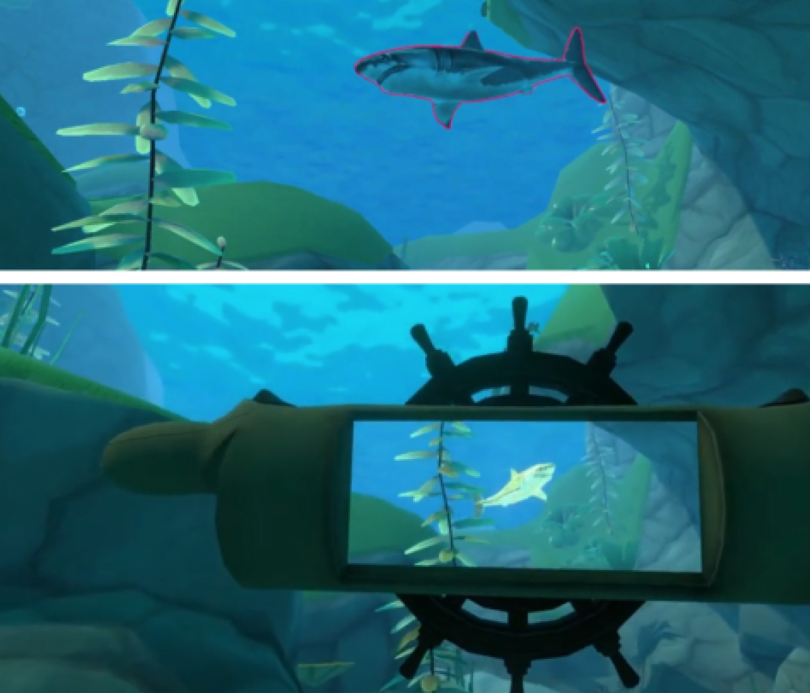

Undergraduate Course
Game Engine Development
This course asks students to build their own game engine rather than treat Unity or Unreal as a black box. They learn the architecture behind real-time rendering, shaders, scene graphs, input systems, resource management, and engine-level design decisions that shape how interactive experiences behave and feel.
- Custom rendering pipeline and shader authoring
- Camera, transforms, lighting, and scene structure
- Game loop, input systems, and engine architecture